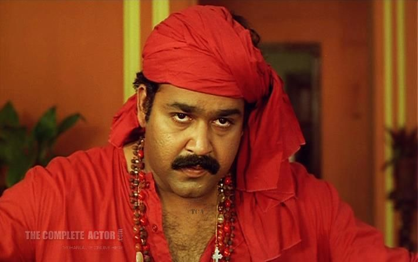

സ്ഫടികം
വെടിവെച്ചാൽ പൊട്ടാത്ത കരിമ്പാറയെ നീയൊന്ന് കുലുക്കി.
ഈ ഒട്ടക്കാലണയ്ക്ക് വിലയുണ്ടെന്ന് നീ കടുവാ ചാക്കോയ്ക്ക് മനസ്സിലാക്കിക്കൊടുത്തു. പകരം നിനക്കെന്താ വേണ്ടേ?
ദേവാസുരം
എന്റെ ഭീഷണീന്ന് പറഞ്ഞാൽ ചില ഊച്ചാളി രാഷ്ട്രീയക്കാരെ കൂട്ട് സ്ഥലം മാറ്റിക്കളയും എന്നൊന്നും ആവില്ല..
കൊന്നുകളയും ഞാൻ.. മടിക്കില്ലാട്ടോ
പുതിയ ആളായോണ്ടാ.. ഇവിടെ ചോദിച്ചാൽ മതി..
മിന്നാരം
ഒരിക്കൽ നീ എന്നെ വല്ലാതെ വേദനിപ്പിച്ചാ പോയത്.. സമയമെടുത്ത് ഒരുപാട് അത് മറക്കാൻ.. എല്ലാം മറന്നു കഴിഞ്ഞപ്പോൾ ഒർമിപ്പിക്കാൻ വീണ്ടും.. മനസ്സ് വീണ്ടും ആഗ്രഹിച്ചതുകൊണ്ടാ സ്വീകരിക്കാൻ ഞാൻ തീരുമാനിച്ചത്.. അപ്പോ വീണ്ടും പോവുന്നെന്ന് പറയുന്നു.
ചന്ദ്രോത്സവം
കാലം പെർമ്യൂട്ടേഷൻസും കോമ്പിനേഷൻസും തെറ്റിച്ചാണ് ഈ സമ്മാനം വെച്ചു നീട്ടുന്നത്. ഇരുട്ടിലായിരുന്നു വിളക്ക് കിട്ടേണ്ടിയിരുന്നത്. മരുഭൂമിയിൽ പെയ്യേണ്ടത് മഴയാണ്.. സ്വർണ നാണ്യങ്ങളല്ല. ഒരു ചാന്ദ്രമാസം.. ആ കാലമേ എനിക്കിവിടെ ഉള്ളൂ. അത് കഴിഞ്ഞാൽ, ഈ ചന്ദ്രോൽസവ നാളുകൾ കഴിഞ്ഞാൽ.. ശ്രീഹരി തിരിച്ചു പോവണം, സ്നേഹത്തിന്റെ ഈ ഇലക്കൂടു വിട്ട്. കളഭത്തിന്റെ, കുങ്കുമ മൊട്ടിന്റെ, നിലവിളക്കിലെരിയുന്ന തിരിയുടെ, മഴയുടെ, മകരക്കാറ്റിന്റെ, പുതുമണ്ണിന്റെ, പാലപ്പൂവിന്റെ, പാലിശേരി തീർക്കുന്ന ബീഡിയുടെ.. അങ്ങനെ എന്റെ എല്ലാ പ്രിയപ്പെട്ട മണങ്ങളെയും പിന്നിൽ വിട്ടിട്ട് എനിക്ക് പോകണം.
രാവണപ്രഭു
അവൾ വളരെ നല്ല കുട്ടിയാണ്.. നല്ല കുട്ടിയെന്ന് പറഞ്ഞാൽ ഞാൻ കണ്ടിട്ടുള്ളതിൽ വെച്ച് ഏറ്റവും നല്ല കുട്ടി. ചില ഇഷ്ടങ്ങൾ അങ്ങനെ ഹൃദയത്തിന്റെ നെല്ലിപ്പടിയിൽ മൂടിക്കിടക്കണം. നെല്ലിപ്പടി! നെല്ലിക്കോട് ഭാസ്കരൻ അല്ല. അവിടെ മൂടി കിടക്കട്ടെ.. സവാരി ഗിരി ഗിരി..
സ്പിരിറ്റ്
പോയ കാലമാണ് രവിയേട്ടാ ഓരോ കുപ്പിക്കുള്ളിലും.. ഒഴിഞ്ഞ കൽപ്പക തുണ്ടുകൾ..
മണിച്ചിത്രത്താഴ്
മടമ്പള്ളിയിലെ മാനസ്സികരോഗി നീ വിചാരിക്കുന്ന പോലെ ശ്രീദേവി അല്ല. ആ രോഗി നിന്റെ ഗംഗയാണ്. അപൂർവ്വമായ ഒരു മനോരോഗത്തിന്റെ അഗ്നികുണ്ഡങ്ങൾ ഗംഗയുടെ കണ്ണില് ജ്വലിക്കുന്നത് ഞാൻ ആദ്യമായി കണ്ടു. ആ നിമിഷങ്ങളിൽ ഒരു നിമിഷം ഗംഗ നാഗവല്ലിയായി മാറുകയായിരുന്നു.. പഴമക്കാരിതിനെ ഭാത കൂടിയതാണെന്നൊക്കെ പറയും. സൈക്യാട്രിയിൽ സ്പ്ലിറ്റ് പേർസണാലിറ്റി, ഡ്യുവൽ പേർസണാലിറ്റി അഥവാ അപര വ്യക്തിത്വം ദ്വന്ത വ്യക്തിത്വം, പൊസ്സെഷൻ സ്റ്റേറ്റ് തുടങ്ങിയ ലഘു മനോരോഗങ്ങളായാണ് കാണുന്നത്.
നരസിംഹം
മോനേ ദിനേശാ, എടഞ്ഞ കൊമ്പന്റെ കൃഷ്ണമണിക്ക് തോട്ടി കേറ്റി കളിക്കല്ലേ.. ചവിട്ടി താഴ്ത്തും നിന്നെ ഞാൻ പാതാളത്തിലേക്ക്..
ആറാം തമ്പുരാൻ

തമ്പുരാൻ എന്ന് വിളിച്ച അതേ നാവ് കൊണ്ട് തന്നെ ചെറ്റേ എന്ന് വിളിക്കേണ്ടി വന്നതിൽ മനസ്ഥാപമുണ്ട്. എടോ അപ്പനെന്ന് പേരുള്ള തേർഡ് റേറ്റ് ചെറ്റേ.. താനാരാഡോ നാട്ടുരാജാവോ? തന്റെ ഈ കളരിയും മർമ്മ വിദ്യയും തരികിട നമ്പറുമെല്ലാം ചിലവാകും ഇവിടെത്തെ പാവം ജനങ്ങളുടെ അടുത്ത്. ഇത് ആള് വേറെയാ.. കളി ഒരുപാട് കണ്ടവനാ ഞാൻ. കൊടിയേറ്റ് നടത്തിയെങ്കിൽ ഉൽസവം ജഗന്നാഥൻ നടത്തും. തന്റെ അറയിലോ അപ്പൂപ്പന്റെ കുഴിമാടത്തിനുള്ളിലൊ വെച്ചിട്ടുള്ള തിരുവാഭരണത്തിന്റെ ആമാടപ്പെട്ടി താൻ കൊണ്ട് വന്ന് തരും.. പുഴക്കാരയിലെ വട്ടത്തറയിൽ ഞാൻ തന്നെ വരുത്തും.. ഇതിനിടയിൽ അറിയാവുന്ന നാറിയ കളികളെല്ലാം താൻ കളിക്കുമെന്ന് എനിക്ക് അറിയാം.. പക്ഷേ മറക്കണ്ട ഒന്നും നടന്നില്ലെങ്കിൽ തന്നെ പച്ചയ്ക്ക് കൊളുത്തിയിട്ടേ ജഗന്നാഥൻ ഈ മണ്ണ് വിട്ട് പോകൂ..
രാജാവിന്റെ മകൻ

രാജുമോൻ ഒരിക്കൽ എന്നോട് ചോദിച്ചു.. അങ്കിളിന്റെ ഫാദർ ആരാണെന്ന്.. ഞാൻ പറഞ്ഞു ഒരു രാജാവാണെന്ന്. കിരീടവും, ചെങ്കോലും, സിംഹാസനവും ഉള്ളൊരു രാജാവ്. പിന്നീടെന്നെ കാണുമ്പോൾ അവൻ കളിയാക്കി വിളിക്കുമായിരുന്നു, പ്രിൻസ്. രാജകുമാരൻ. രാജാവിന്റെ മകൻ. Yes I am a prince. Underworld prince. അധോലോകങ്ങളുടെ രാജകുമാരൻ.. ജീവിതം തുടങ്ങിയപ്പോൾ വാശിയോടെ നേടിയെടുത്ത സിംഹാസനം.